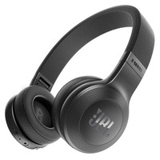
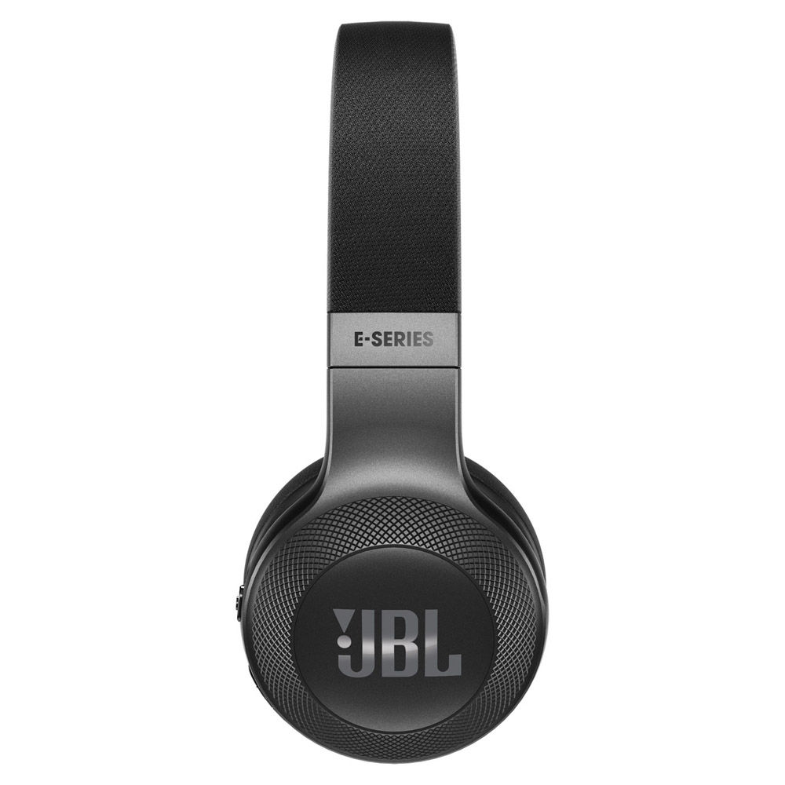
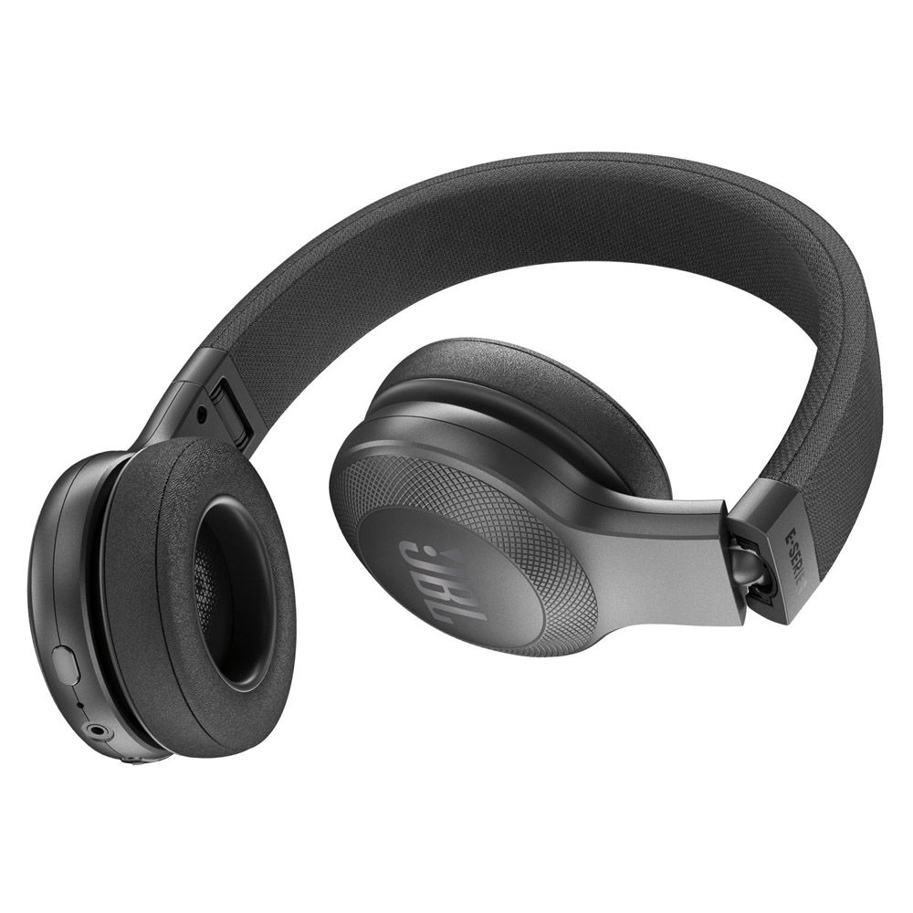
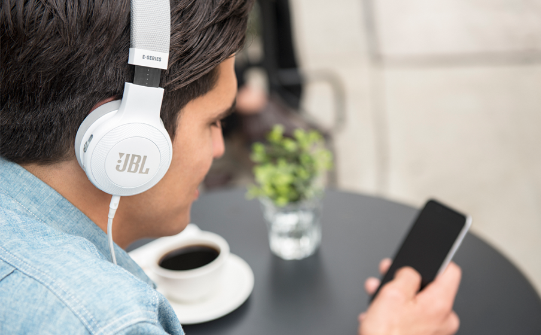

L'inform

"

JBL E45BT Noir
Réf JBL : E45BT-ARC-BT-NOIR
Casque nomade - Supra-aural - Bluetooth -Télécommande tactile - Microphone intégré
Réf JBL : E45BT-ARC-BT-NOIR
Casque nomade - Supra-aural - Bluetooth -Télécommande tactile - Microphone intégré


JBL E45 BT Noir
JBL
Garantie légale de conformité: 2 ans

JBL E45 BT Noir
Le son signature de JBL
Le son signature de JBL est produit par de puissants haut-parleurs de 40 mm dans un style sobre et élégant.
Le casque supra-auriculaire sans fil E45 BT JBL offre le son signature JBL directement dans vos oreilles. L'E45 BT est l'un de nos ensembles les plus polyvalents jamais créé, il inclut jusqu'à 16 heures d'autonomie de batterie, un arceau textile innovant et chic et une conception supra-auriculaire ergonomique. Ceci implique que votre divertissement se prolonge et que votre facteur de plaisir est démultiplié dans toutes vos activités - travail, transports ou un simple balade en ville.
Vous pouvez^passer sans effort de la musique de votre appareil portable à un appel de votre téléphone, par exemple, afin de ne jamais manquer un appel. Avec son apparence élégante, plusieur options de couleurs et la commodité supplémentaire d'un cable détachable avec télécommande et microphone, vous ne voudrez jamais être vu sans votre casque E45 BT.
JBL
Garantie légale de conformité: 2 ans
JBL E45 BT Noir
Le son signature de JBL
Le son signature de JBL est produit par de puissants haut-parleurs de 40 mm dans un style sobre et élégant.

Le casque supra-auriculaire sans fil E45 BT JBL offre le son signature JBL directement dans vos oreilles. L'E45 BT est l'un de nos ensembles les plus polyvalents jamais créé, il inclut jusqu'à 16 heures d'autonomie de batterie, un arceau textile innovant et chic et une conception supra-auriculaire ergonomique. Ceci implique que votre divertissement se prolonge et que votre facteur de plaisir est démultiplié dans toutes vos activités - travail, transports ou un simple balade en ville.
Vous pouvez^passer sans effort de la musique de votre appareil portable à un appel de votre téléphone, par exemple, afin de ne jamais manquer un appel. Avec son apparence élégante, plusieur options de couleurs et la commodité supplémentaire d'un cable détachable avec télécommande et microphone, vous ne voudrez jamais être vu sans votre casque E45 BT.
Caractéristique Techniques
| Audio |
Casque dynamique fermé Type : supra-aural Pliable Prise : Mini jack stéréo 3,5 mm (1/8") Haut-parleur dynamique : 40 mm Réponse en fréquence : 20 Hz – 20 kHz Impédance : 32 ohms Spécification Bluetooth : 4 |
|---|---|
| Poids | 185.8 grammes |
| Contenu de la boite |
1 paire d’écouteurs E45BT 1 câble détachable 1 câble de recharge Carte de mise en garde Carte de garantie Fiche de sécurité QSG |